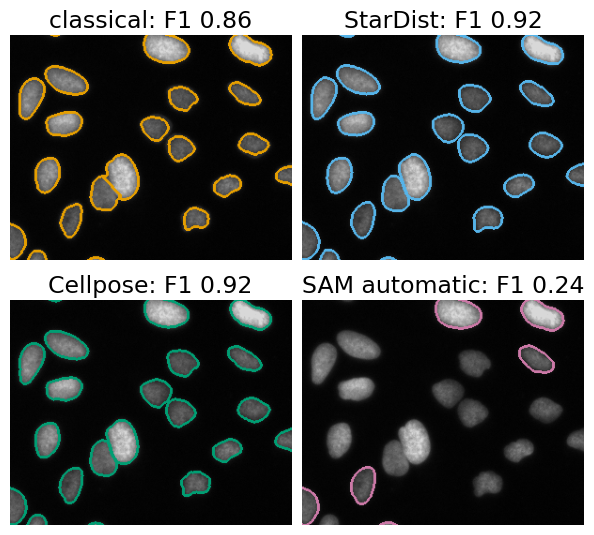
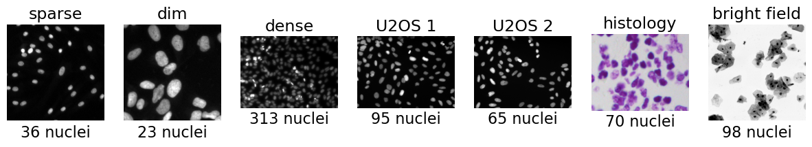
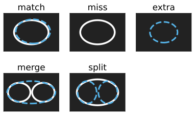
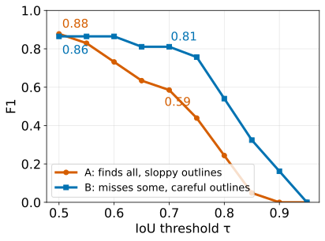
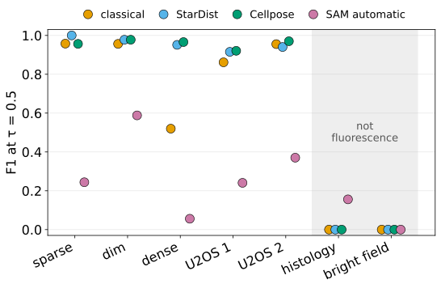
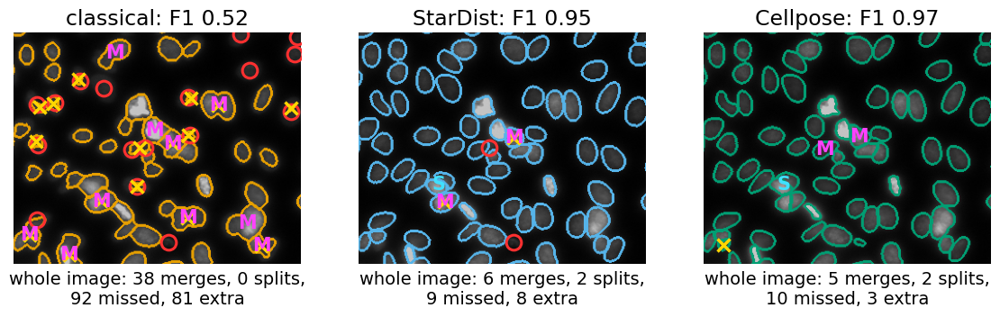
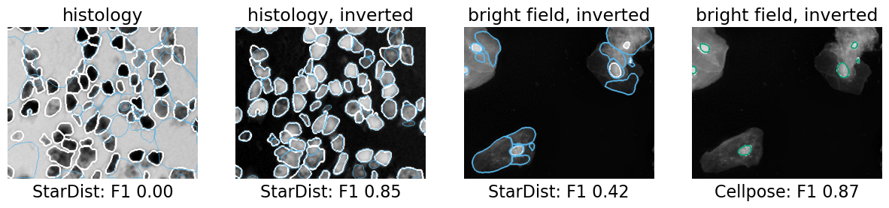
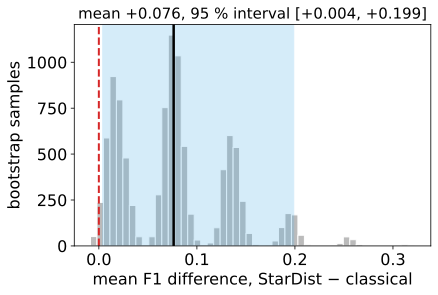
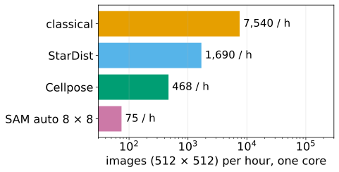
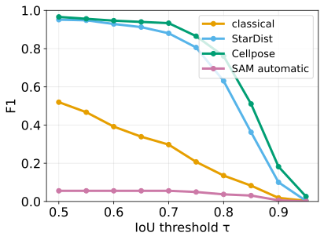

The last four units opened four networks and showed how each one turns its output into objects. This unit asks the practical question: on my images, is a network better than a classical pipeline, by how much, and at what cost?
Slides titled The math give the formulas and proofs; the ideas are complete without them.
“The network looks great” is a statement about pictures. The question needs numbers:
The answer depends on the images: there is no “best method”, only a best method for this kind of image.

| method | what it needs from you |
|---|---|
| classical | 5 knobs per image type |
| StarDist | nothing (fluorescence) |
| Cellpose | the cell diameter |
| SAM automatic | grid density, filters |
| YOLO | a fine-tuned nucleus class |
The interactive counterpart of SAM’s clicks is the graph cut with seeds (graph-cut day): both need a person per object.

From the evaluation day:
One rule: compare methods on the same images with the same τ, and report F1 at more than one τ.

20 nuclei, two methods:
A finds more, B outlines better. For counting nuclei: A. For measuring their areas: B.
A curve that stays high and flat means good outlines; a curve that drops early means objects found roughly.

For a fixed pair of label images, let \mathrm{TP}(\tau) be the number of matched pairs at threshold \tau, N_P and N_T the numbers of predicted and true objects: F_1(\tau) = \frac{2\,\mathrm{TP}(\tau)}{N_P + N_T}.
F1 at τ = 0.5 / at τ = 0.7, every method out of the box (measured; the demo reproduces every number):
| sparse | dim | dense | U2OS 1 | U2OS 2 | histology | bright field | |
|---|---|---|---|---|---|---|---|
| nuclei | 36 | 23 | 313 | 95 | 65 | 70 | 98 |
| classical | 0.96 / 0.96 | 0.96 / 0.83 | 0.52 / 0.30 | 0.86 / 0.80 | 0.96 / 0.90 | 0 / 0 | 0 / 0 |
| StarDist | 1.00 / 1.00 | 0.98 / 0.98 | 0.95 / 0.88 | 0.92 / 0.83 | 0.94 / 0.90 | 0 / 0 | 0 / 0 |
| Cellpose | 0.96 / 0.96 | 0.98 / 0.93 | 0.97 / 0.93 | 0.92 / 0.81 | 0.97 / 0.91 | 0 / 0 | 0 / 0 |
| SAM automatic | 0.24 / 0.24 | 0.59 / 0.59 | 0.06 / 0.06 | 0.24 / 0.22 | 0.37 / 0.35 | 0.16 / 0.13 | 0 / 0 |


On the dense image (313 nuclei, a crop shown): one global threshold has to serve bright and dim nuclei alike: dim nuclei are left out or cut small (missed ○, extra ×), and touching nuclei share one distance-transform peak (M). The networks have learned what a nucleus looks like next to another nucleus: 6 and 5 merges in the whole image, against 38.

F1 at 0.5 of the classical pipeline:
| image | default knobs | tuned on the image |
|---|---|---|
| sparse | 0.96 | 1.00 |
| dim | 0.96 | 0.98 |
| dense | 0.52 | 0.65 |
| U2OS 1 | 0.86 | 0.96 |
| U2OS 2 | 0.96 | 1.00 |
The tuned numbers are optimistic: they would need to be checked on other images.
Per-image differences d_i = F_1^{A}(i) - F_1^{B}(i), i = 1 \dots n; the mean \bar d estimates the difference.
Bootstrap over images: draw n images with replacement, recompute \bar d^{*}; repeat 10 000 times. The 2.5th and 97.5th percentiles of \bar d^{*} give a 95 % interval.

For one 512 × 512 image on one laptop core, in the browser:
| parameters | download | time | |
|---|---|---|---|
| classical | 5 knobs | none | about 0.5 s |
| StarDist | 1.4 M | 5.5 MB | 2.1 s |
| Cellpose | 6.6 M | 13 MB | 7.7 s (4 workers) |
| SAM automatic 8 × 8 | 39 M | 78 MB | 48 s |
Annotation cost: classical none (but tuning); a pretrained network none if your images look like its training images; fine-tuning needs hundreds of annotated objects. Checking any method needs an annotated subset of your images.

| your images | first choice | check with |
|---|---|---|
| sparse, bright, round nuclei | classical (fast, explainable) | an annotated subset; F1 at 0.5 and 0.7 |
| dense or dim nuclei | StarDist or Cellpose | same, look at merges |
| irregular cells, cytoplasm | Cellpose (a cell model) | same, look at splits |
| a few odd objects to outline | SAM clicks, or graph-cut seeds | a person, per object |
| counting a known class in video | a fine-tuned detector | boxes vs. annotated boxes |
| anything not like the training images | fine-tune, or classical | a held-out annotated subset |
Always: score on a held-out annotated subset of your images, and compare with the agreement of a second annotator: a method cannot be expected to beat that.
